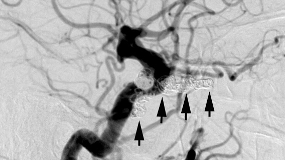

Dilated superior ophthalmic vein often usually visible on CT or MRI
One or more dural branches of the external carotid artery
empty directly into the cavernous sinus, causing early filling,
features visible only on digital angiogram
Tip:
congestive ophthalmic features reflect major venous backflow via orbital veins (“red-eyed shunt”); ocular ductional deficits without congestive features probably reflect major venous outflow through inferior petrosal sinus (“white-eyed shunt”); optic neuropathy can occur with major venous outflow in any direction
Order orbit CT or MRI, looking for a dilated superior ophthalmic vein; if it is present, make a presumptive diagnosis and decide if clinical features warrant fistula closure
If fistula closure is warranted, order CTV or MRI/MRV or go directly to digital angiography, which is needed to document the arterial feeders of the fistula
Direct fistula: will not close spontaneously, so must be closed promptly by endovascular coiling
Indirect fistula: may close spontaneously within nine months, but if it persists beyond that interval, it should be closed endovascularly, provided any of the following clinical features is present
Severe pain
Optic neuropathy
Intractable high intraocular pressure
Unremitting diplopia
Retinal vein occlusion
Disfiguring congestion

Direct and indirect fistulas are usually closed by coil deposition in the cavernous sinus via the inferior petrous sinus, but the approach depends on the location of feeding vessels and venous access
Risks are acceptable when experienced interventionalists undertake this task, but may require several procedures
Immediately after endovascular intervention, congestive features may worsen until new venous exit routes develop
Within weeks to months of successful closure, congestive ophthalmic manifestations usually resolve, but cranial nerve deficits may persist for months and sometimes forever
Carotid Cavernous Fistula